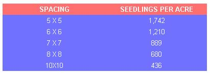
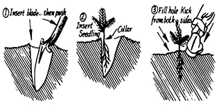

One Man's Forest
Reprinted article on starting and developing a forest, including what and where to plant, plantation layout, how to plant seedlings.
January/February 1975
Reprinted by permission of The Stephen Greene Press from One Man's Forest: Pleasure and Profit From Your Own
Woods by Rockwell R. Stephens. Copyright © 1974 by Rockwell R. Stephens.
For some years, Mr. and Mrs. Rockwell R. Stephens-a city-bred couple in "retirement" on a hundred acres of Vermont hill country-have managed their own woodlot for pleasure, fuel and extra cash, In fact, they've made quite a name for themselves as tree farmers (their work has been cited for excellence by the American Forest Institute), Now Mr. Stephens has set down the basics of this skill in One Man's Forest, just published by The Stephen Greene Press. The book sells for $ 7.95 in hard cover and $4.50 in paperback and is worth much more to any beginner who wants to do right by his own stand of trees. Reprinted here is Chapter 8 ("To Plant a Tree') from the guide.
To the air traveler flying over most of the Eastern States the land below appears to be one huge forest. The carpet of greenery is spotted with farmland, most prominent in the soil-rich valleys, but the overall impression is trees, trees and more trees. Vermont is 72 percent forested, Maine has even more and the entire area is two-thirds to three-quarters covered by trees.
These green acres arouse mixed feelings in the forester and the conservationist. The former sees an enormous economic asset whose productive output is probably only a half to two-thirds of its potential for lack of even the most elementary management. The latter may be content with the vastly important contribution this greenery makes to climate, soil and water, but he may also be concerned with the growing threat of destruction imposed by the forces of industrial and urban expansion. But both can take some satisfaction in the new and growing attention to problems of land use and pollution.
The forester, however, sees more than acres of unproductive woodlands. Fields and hillsides that once were cropland or pasture now lie deserted and neglected, growing scrub pine, clumps of juniper and weeds. Once an adequate economic base for a small farm, their former resources have become too limited for profitable farm operation. New economic and social forces have taken the farmer and his sons off to other occupations, and the land has passed to nonresident owners.
Here, then, are acres that play no useful part in the economy. Planted to pine or other species appropriate to their site, they can return a substantial economic increment and play a part as well in contributing the manifold additional benefits of forest cover. These are more substantial than is commonly appreciated. It is said that the forest acts like a great buffer to ameliorate the extremes of wind, sun and rain. It can reduce wind velocity by 20 to 60 percent and intercept rain and snow to reduce annual precipitation reaching the ground by 15 to 30 percent. As a natural air conditioner it can reduce maximum summer air temperatures by 10 percent, and absorb and reflect some 90 percent of visible radiation.
"But . . ." says the environmentalist who sees beyond the trees to the whole panorama of hill and valley, forest and field. "But what of the landscape? There is more than one kind of desert. Are we to have no relief from the solid mass of the forests? Field and forest make the pattern we so admire. Let us keep some open space."
And here lies a dilemma. Shall the woodlotter fill his open land with a plantation, or is the quality of his landscape such that the choice is to leave it unchanged? Planting and even minimal management will produce a financial return. Open land will require annual care. One-time cropland can perhaps be restored to hay or pasture. Whether either of these latter uses is economically viable depends on factors only the owner can evaluate, and many of these may be unpredictable. At any rate, the land will always be there.
WHERE AND WHAT TO PLANT
A forecast is somewhat simpler to prepare for a plantation. First step is to determine the quality of the site. Here again the forester and the Soil Conservation Service are the authorities on which to rely for this major determination. Soil and topography will determine the area and to some extent the choice of what to plant. How much of the area is to be planted remains the owner's choice. Accessibility is a factor also to be considered, for there will be work to do for man and machine. Several small areas may be selected for planting rather than one large plot. The quality of the landscape as well as topography come into play in this respect. Five-year-old pines are a carpet on hill and field, but fifteen years later their wall will be a curtain . . . a new horizon. Will these mature trees destroy a cherished view? It may be wise to plan ahead.
What to plant is the next question. It is sometimes possible to make a good guess about what will grow on the site by observing what is growing on similar sites. What trees border the open land? Are there any obvious factors that would preclude their growing in the plantation? One, certainly, is the exposure to which new seedlings will be subjected. Many species require early protection from the sun, while others are more tolerant.
Here again the forester must be the guide. He will match species to the soil. And, from his experience with other plantations in his region, he will have well-tested advice, not only on species, but on all other aspects of cultivation and management of this new enterprise.
More likely than not he will recommend red or white pine, for pine is the pioneer of the eastern forest and is adaptable to a variety of sites and soils. Red pine does not need the shade of other growth, will grow on dry soil and is less subject to disease than the white pine. White pine wants more moisture but not wet soil. It will tolerate shade, but is subject to blister rust and the white pine weevil. These hazards need watchfulness and can be mitigated by prompt attention and treatment. Both are long-lived trees, and both will produce posts, pulp cuttings and saw logs at about the same timespan. Soil, exposure and the degree to which intensive cultivation can be practiced determine the growth rate and the periods for intermediate harvests before they reach saw log size some 25 years after planting.
One Vermont red pine plantation, under the most intensive cultivation, has produced something salable annually from its fifteenth year to its sixtieth. A municipal forest, reported by the state forestry department, produced revenue of $51.00 per acre for thinnings alone over a thirty-five-year period after planting, and at that time its standing timber had a value of over $180 per acre.
Red and white pine are not, of course, the only species open to the plantation planner. Scotch pine, balsam, larch and spruce are among other choices. The forester is best qualified to point out their relative merits. The hardwoods, including maple and ash, are not likely to be included on his list. Hardwoods can be planted under the right conditions, but such plantations are not common. Reproduction of maple and ash either by planting or natural seeding is practically impossible in some areas where in recent years the deer herd has far exceeded the natural food supply and has destroyed these for forage. Scotch pines are subject to severe damage by the porcupine in northern areas, to such an extent that state forest authorities combat the problem by releasing a fisher cat in damaged areas to reduce the porky population.
PLANTATION LAYOUT
How many trees to plant will be determined by the area selected and, more significantly, by the spacing between the seedlings and between the rows. For a purely ornamental planting, such as a single group of a few trees or a row of a dozen or so, minimum space between seedlings should be six feet for white and eight feet for red pine. More space will encourage a fatter growth if screening is the objective. But for a plantation, six- , seven-or eight-foot spacings are most often chosen. Twelve-foot spacing has on occasion produced unusually rapid growth, but this figure does not seem to be generally acceptable.
The decision on how far apart to plant seedlings and space the rows is best made when the forester checks the site and makes his recommendation on what to plant. Without this advice it is usually safe to compromise on a seven-foot spacing. Eight is often recommended for red pine, but one theory holds that this encourages rapidly tapering tree trunks with heavy side branches. Seven feet is the choice of this school of thought. White pine may be set five feet apart rather than the usually recommended six, on the theory that the closer spacing gives better protection from the white pine weevil. But the forester's experience and knowledge of local conditions are the best guide.
The number of seedlings per acre required for planting at various spacings is as follows:
Why so many trees crowded into an acre? Early mortality from any number of causes will dispose of some. More significantly, early crowding will encourage the growth of clear wood, free from knots. Crowding will tend to kill the lower branches and provide some natural pruning, to be supplemented later by human attention as the tree grows higher. The ultimate objective is 150 to 200 mature trees per acre for a final harvest.
If planting is to be done in the spring or early summer (the best time), it is well to check where, what and how much with the forester during the preceding late summer or fall, before a snowfall. Seedlings should be ordered at least three months in advance of planting time. The state forestry department nurseries are the best source, and the forester or county agent wilI provide details of ordering . . . but the supply goes to first comers, and late-season orders may find the supply has been exhausted.
The care of seedlings after delivery and during the planting operation is of paramount importance. They must be kept cool and moist until they go into the ground. They should be well watered as soon as they arrive. If there is to be some delay in planting, one suggestion is to dig a little ditch along the edge of a garden, then cover the roots well with loose soil and add water. Or wrap them in burlap or grain sacks and water. When planting, a fair supply can be carried along the rows in a bucket or basket . . . again, covered by moist earth. The main stock should be kept moist as circumstances permit.
One's own ingenuity must solve the problem of how to lay out a planting grid. The hope is that five or so years later the straight and evenly spaced rows will march across the field like a well-drilled regiment, every man in his place. For our only attempt at this, we used a couple of balls of the cheapest white twine to provide straight base lines, and a seven-foot measuring stick to fix the intervals. A compass would have provided nicely the exact right-angle corners, but this seemed a little overprecise at the time, so an old survey trick came to mind. Stand on the base line and extend the arms out to the side, arms and back lined up with the base line. Without moving the shoulders, bring the arms forward, put thumbs together and sight over the thumbs. If there is a pocket tape handy, the resulting angle can be checked with the old three-four-five rule for the two sides and hypotenuse of a right triangle. Measure back three feet from the corner along the base line, and put in a twig marker. Next measure four feet along the line you hope is at a right angle to the base line and mark the point. Now five feet on the tape should join the three and four-foot points, forming the long side of the right triangle. If not, move the four-foot line accordingly.
Passages to give easy access to the whole plantation are a great convenience if it is to be kept under cultivation. Inspection, pruning and thinning and eventual harvest all involve movement of man and machine. If intensive cultivation is to be part of the program, plant three rows, then skip a row. The open space will do no harm, and may even benefit the growth. But these lanes will have to be watched for intrusive weed trees and kept open, lest the area they subtract from planting be worse than wasted.
One such case of neglect is a ten-acre red pine plantation on an excellent site. The owners were enthusiastic about using it as a demonstration plot, and welcomed the three-row layout. Fifteen years later it was a shambles of waist-high weeds and self-sown white pine, cherry, birch and poplar. The pine had been pruned once to six or eight feet and there were some fine young trees four to six inches in diameter, but many were crowded by this invading growth. Any improvement work such as a thinning for pulpwood or posts, or even the removal of invading weed trees, was going to be difficult, and expensive in time or money or both. In another five or ten years the sturdiest of the present trees can probably be harvested, but the plantation will have produced only a small fraction of its potential.
HOW TO PLANT SEEDLINGS
Planting seedlings is a relatively simple operation. The quickest method involves a team of two and a narrow spade. Number 1 drives the spade vertically into the ground and pushes the handle away from him. This makes a V-shaped hole. Number 2 places the seedling in the hole close to the vertical side, spreading the roots as he does so. The root collar-noticeable as the point on the seedling that indicates the top of the root growth-should be the point where the seedling stem emerges from the soil, just at ground level. Number 1 slips the spade out of the hole, not disturbing the seedling roots, and moves to the next site. Number 2 pushes the disturbed soil back in place, closing the hole, stamps on both sides of the slit to compact the soil somewhat and prevent air from getting at the roots and moves on to join his partner.
A slower method, which is said to produce a higher survival rate, may be desirable if the ground is very dry, or if there is heavy sod. In this case a round-nose shovel may be used to advantage. First step is to scoop off a piece of sod at the planting site. Then a shovelful of soil is lifted out, and another from the opposite side to make a round hole. The seedling goes in, with well-spread roots, and dirt goes back in the hole. The seedling is held to keep the root collar at ground level. More dirt goes in to fill the hole, then two or three stamps with the foot compact the fill to exclude air. Important details: avoid crowding the roots; position the root collar at ground level for proper depth; compact the soil firmly to wind up the operation.
Planting can be done with a mattock or with a special type of spade called a planting bar or dibble. Mattock technique is substantially the same as with a spade. The planting bar, however, requires three thrusts into the ground compared to the single stroke with the spade. The first thrust with the bar goes in at an angle, the handle held toward the user. The bar is then pushed forward to the vertical to make a V-shaped slot. The seedling goes in against the vertical side of the slot after the bar is withdrawn. The bar is moved back toward the planter about two inches, and pushed straight down. The handle is then pulled back so the blade will pivot forward to firm the soil at the bottom of the roots of the seedling just planted, then pushed forward to close the top. This leaves another hole. The bar moves back another two inches toward the planter, goes in straight, then the handle moves back and forth to fill the hole. A kick with the heel packs down this spot, then the soil around the seedling is packed down. End of operation.
This rather more time-consuming procedure may offer a theoretical advantage in compacting the soil and protecting the roots. But a seedling, if it has been properly cared for before planting, is a rugged individual whose survival rate is a matte of some amazement for most amateurs. The tractor-drawn planting machine is of course the fastest method-and probably the only economical one-of planting large areas. But there are few more satisfying rewards than the sight of straight-ranked young pines and one's own private boast that "I planted you all with my own two hands."
 |
 |
 |